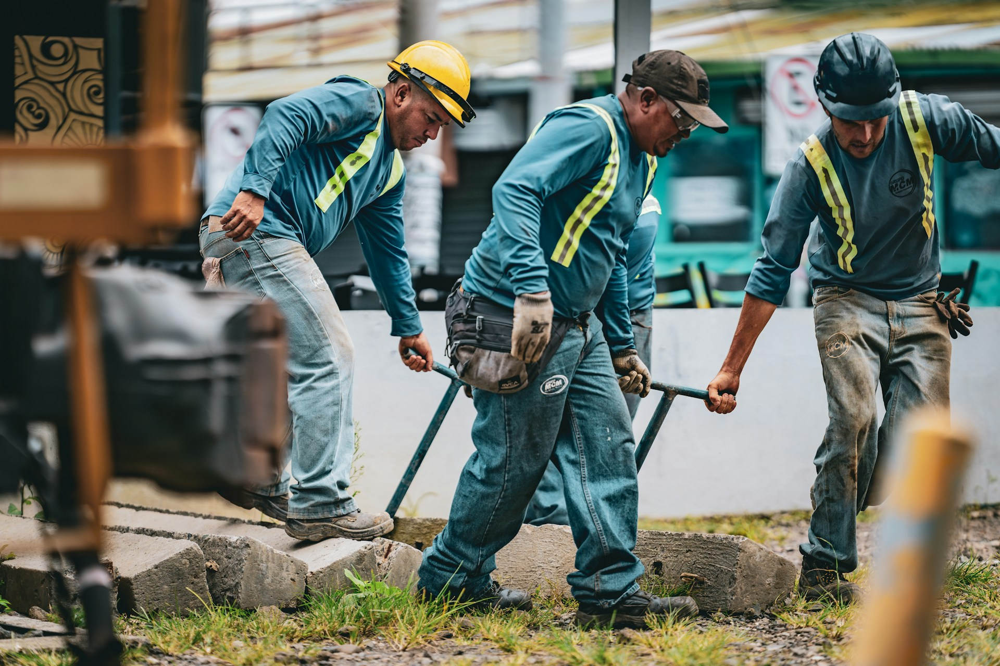

Good strategy.
Stronger people.
Real progress.
Build stronger leaders, help managers succeed, and make talent decisions that move your organization forward.
Which of these
sounds familiar?
You don’t need to know the name of the solution. Start with the challenge in front of you.
“We need stronger leaders at every level.”
“Our managers know what’s expected. Follow-through is uneven.”
“Who’s ready to move up? It depends on who you ask.”
“We know the priority. We need a workable plan.”
“We keep investing. Something still isn’t working.”
“Honestly? A little bit of all of the above.”
Help people succeed.
Make the work
work better.
New expectations need support. Clear decisions, practical capabilities, and everyday routines make it possible for people to deliver.
Corework connects the development of leaders and managers with the conditions that help them put it into practice.

01Who owns the work?
Make accountability clear, including who can resolve the decisions that keep progress moving.
02What do people need to be able to do?
Define capability through the actual work, with clear evidence of what good performance looks like.
03How do decisions get made?
Connect expectations to consistent decisions about hiring, development, advancement, and investment.
04What do managers need to succeed?
Look at the authority, information, time, and support managers need to act on new expectations.
05How does change become everyday practice?
Build the new approach into workflows and routines so progress can continue beyond a program or pilot.
06How will you know it’s working?
Choose useful measures, learn from what happens, and adjust the approach as the work changes.
More than 25 years helping employers, leaders, and workforce organizations build capability and put strategy into practice. Richard leads Corework’s engagements, bringing hands-on operating experience and a collaborative approach to complex challenges.
Get to know Corework ↗A closer look at
what gets in the way.
Start with what
you’re seeing.
You don’t need a perfectly defined brief to begin.
Messy descriptions welcome.